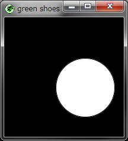

Ruby the Red Gem of Programming
This is an archived post This is an archived post
Previous
Index
Next
Green Shoes motion method
October 24 2010, 2:24 AM
by ashbb

This is
the same snippet
on Red Shoes manual.
Watch a tiny online
demo
. :-D
ashbb
910 views and 0 responses